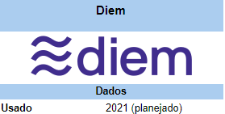
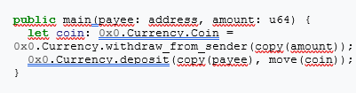

Diem : A cripto "do" Facebook
Diem (anteriormente conhecida como Libra) é uma criptomoeda baseada em blockchain autenticado proposta pela empresa de mídias sociais Facebook. O projeto será administrado e criptograficamente confiado pela Associação Diem. A ideia do CEO do Facebook, Mark Zuckerberg, é "simplificar o mais possível as transações financeiras para todas as pessoas do mundo, onde quer que vivam, tenham ou não uma conta bancária". O lançamento está planejado para 2020.
Até o presente momento não foram constatadas a existência da moeda ou da rede, somente códigos experimentais e rudimentares foram publicados.
História
No dia 4 de janeiro de 2018, o CEO do Facebook, Mark Zuckerberg, fez uma postagem no seu perfil, demonstrando o interesse da companhia em aprofundar os seus estudos sobre os aspectos positivos e negativos das criptomoedas.
Em maio de 2018, o vice-presidente do Facebook e ex-presidente do PayPal, David Marcus, saiu da Facebook Messenger para entrar na nova divisão de Blockchain, primeiras matérias sobre o planejamento de uma criptomoeda foram divulgadas.
No mês de fevereiro de 2019, já haviam mais de 50 engenheiros trabalhando no projeto.
A confirmação de que o Facebook teria a intenção de criar uma criptomoeda, na época chamada de GlobalCoin" ou "Facebook Coin", surgiu em abril de 2019.
A moeda foi formalmente anunciada em 18 de junho de 2019, e sua primeira versão deve ser lançada em 2020.
Em 15 de julho de 2019, Facebook anunciou a moeda não será lançada até que todas as preocupações regulatórias tenham sido cumpridas e apropriadamente aprovadas.
Características
O plano é que a Diem seja lastreada por ativos financeiros como cesta de moedas, e títulos do governo do Tesouro dos EUA para evitar a volatilidade.
Ao contrario de criptomoedas como Bitcoin ou Ethereum que usam blockchains "sem autenticação" (Qualquer usuário pode participar do processo de mineração), a blockchain da Diem será operada por uma rede de nós validadores supervisionada pelos Membros Fundadores da Associação Diem (Blockchain autenticado) em que cada membro será responsável pela execução de um 'nó' (computador dedicado a fazer validações das transações já validadas). O que demanda confiança na associação Diem como se fosse um "banco central". Junto do crescimento da rede e o aumento de sua autossuficiência, a Associação Diem trabalhará na transição gradual para um modo de operação sem autenticações.
Associação Diem
A associação Diem foi fundada por 28 membros e foi sediada em Genebra, Suíça.. Alguns dos parceiros tem o objetivo de fazer transações financeiras diárias, como pagar contas, fazer compras e utilizar o transporte público. Os membros são separados em 6 grandes grupos:
- Pagamentos: Mastercard, PayPal, PayU, Stripe e Visa;
- Tecnologia e Mercados: Booking Holdings, eBay, A subsidiária do Facebook Novi, Farfetch, Lyft, MercadoPago, Spotify e Uber;
- Telecomunicações: Iliad e Vodafone;
- Blockchain: Anchorage, Bison Trails, Coinbase e Xapo;
- Capital de risco : Andreessen Horowitz, Breakthrough Initiatives, Ribbit Capital, Thrive Capital, Union Square Ventures;
- Organizações sem fins lucrativos, multilaterais e instituições acadêmicas: Creative Destruction Lab, Kiva, Mercy Corps e Women's World Banking.
Repercussão
Logo quando surgiram rumores sobre o lançamento da Diem, o mercado de criptomoedas se agitou, ajudando o Bitcoin a superar a marca dos US$ 11 mil, além de fazer as ações do Facebook subirem.
Mas a criptomoeda já possui críticas e opositores como o Banco Central da França. e autoridades da União Europeia.
Críticas regulatórias dos estados unidos.
Reguladores e políticos dos estados unidos expressaram suas preocupações em meados de 2019. Maxine Waters, presidente do Comitê de Serviços Financeiros dos Estados Unidos pediu ao Facebook para suspender o desenvolvimento e o lançamento da Diem, citando uma lista de escândalos recentes e que "o mercado de criptomoedas atualmente carece de um claro marco regulatório". O comitê também enviou uma carta ao Facebook pedindo que a companhia pare o desenvolvimento da Diem, apontando preocupações com a privacidade, a segurança nacional, trocas e políticas monetárias.
Jerome Powell, presidente da Reserva Federal, testificou perante o congresso no dia 10 de julho que o Fed tinha "preocupações sérias" de como a Diem iria lidar com "lavagem de dinheiro, proteção ao consumidor e estabilidade financeira"
O presidente Donald Trump twittou no dia 12 de julho que: "Se o Facebook e outras empresas querem se tornar um banco, eles devem buscar uma nova carta bancária e estar sujeito à todas as regulamentações de Bancos
Críticas regulatórias internacionais
O ministro de finanças da França, Bruno Le Maire, falou a radio francesa Europe 1 que a Diem não poderia ser permitida a se tornar uma moeda soberana. Ele avisou ao parlamento francês sobre preocupações dele sobre a Diem como privacidade, lavagem de dinheiro e financiamento de terrorismo. Ele pediu aos governadores dos bancos centrais do Grupo dos Sete que preparem um relatório sobre os planos do Facebook.
O presidente do Banco da Inglaterra, Mark Carney, disse que há necessidade de manter uma "mente aberta" sobre novas tecnologias para transferências de dinheiro, mas "qualquer coisa que funcione neste mundo se tornará instantaneamente sistêmica e terá que estar sujeita aos mais altos padrões de regulamentação".
Membro do Parlamento Europeu da Alemanha, Markus Ferber, avisou que o Facebook pode se tornar um sistema bancário sombra.
O governo do Japão já começou o processo de invertigação da Diem e está fazendo análises sobre o efeito na política monetária japonesa e regulação fiscal. Isso será feito antes do grupo dos Sete se encontrarem na França entre 24 e 26 de agosto de 2019.
O Comissário Federal Suíço de Proteção e Informação de Dados disse que não ouviu nada do Facebook mesmo apos David Marcus dizer ao senado americano que o órgão iria supervisionar o projeto.
Privacidade
O plano da Facebook é deixar a Novi resposável pelo gerenciamento da Diem para usuários do Facebook, os executivos do Facebook afirmaram que a Novi não compartilhará informações de compra de uma conta sem autorizaçãoImplementação
Consenso da Blockchain
A Diem pretende começar a transicionar para um modelo sem autenticação usando o sistema de Prova por participação em cinco anos. Embora o próprio paper admite que não exista solução "que possa entregar escalabilidade, estabilidade, e segurança necessária para dar suporte a bilhões de pessoas e transações ao redor do globo através de uma rede sem autenticação".
Código
O código fonte da Diem é escrito em Rust e foi publicada como open source sobre a licença Apache na plataforma Github: https://github.com/diem/diem
Elaine Ou, escritor da Bloomberg News, tentou compilar e rodar o código publicamente lançado da Diem. O software não fez mais que permitir moedas falsas serem colocadas em uma carteira; Quase todas as funcionalidades do paper ainda não estão implementadas, incluindo os "maiores características que serão inventadas". Elaine ficou surpreso que o Facebook "iria lançar um software em tal estado"
Carteira Digital
Facebook planeja lançar a sua carteira digital Novi em uma data indefinida. A Novi estará disponível no IOS e Android, mas você poderá enviar moedas Diem pelo Messenger e WhatsApp.
Link Official Novi: https://www.novi.com
Move
Move é a linguagem flexível para contratos inteligentes e transações customizáveis da Blockchain da Diem. Será uma linguagem de programação estaticamente tipada, compilada para bytecode.
Abaixo, um exemplo de script de transação peer-to-peer do paper
Fonte: Wikipédia